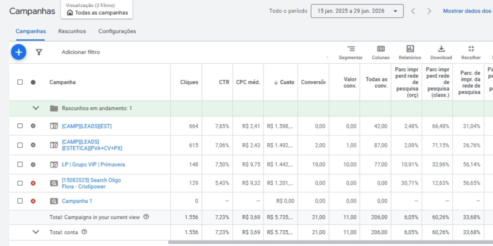
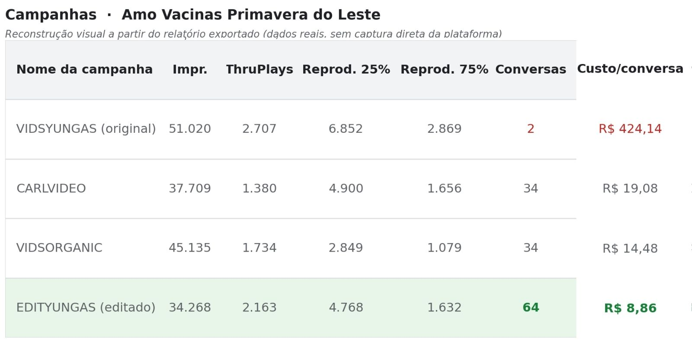
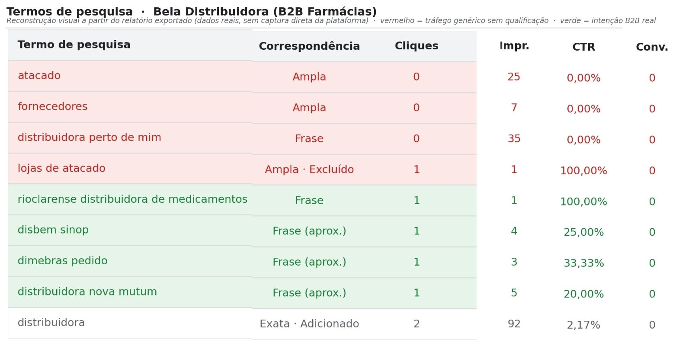
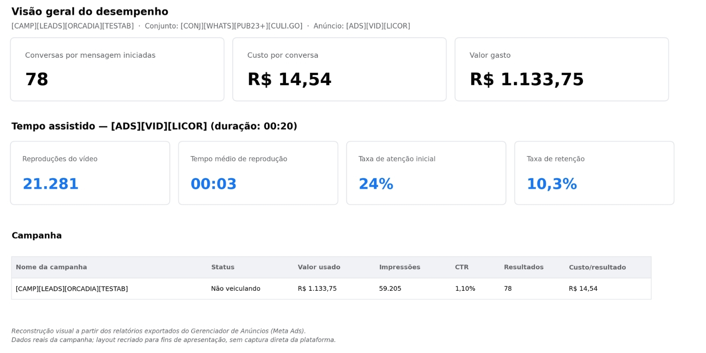

Tráfego pago que converte
Não rodo campanha só para gerar clique. Penso em qual ação realmente importa para onegócio antes de configurar qualquer coisa, e ajusto o que for preciso até o número fazer sentido.
Performance Marketing · Tráfego Pago · Dados, Funil e Conversão
Especialista em performance marketing. Não adivinho o que funciona: descubro com dado e provo com número antes de recomendar qualquer mudança.
Como eu trabalho
Não rodo campanha só para gerar clique. Penso em qual ação realmente importa para onegócio antes de configurar qualquer coisa, e ajusto o que for preciso até o número fazer sentido.
Quando um resultado não bate, eu não aceito o número como está. Eu investigo a causa raiz, formulo uma hipótese e testo até encontrar onde está o gargalo real.
Gosto de cruzar informação que parece solta e achar o padrão escondido nela. Às vezes oproblema não está onde todo mundo está olhando, e é justamente aí que eu procuro primeiro.
Eu também entendo de estrutura de página e experiência do usuário, porque de nada adianta um anúncio bom levando pra um lugar que não converte.
O que os resultados me ensinaram
A conta chegou com uma campanha de busca direta, nicho e localidade, gastando mais de R$1.200 sem gerar uma única conversão registrada.
Identifiquei que o problema não era só a segmentação: era o destino do clique. Reestruturei o funil por temperatura de intenção e criei uma rota de nutrição via grupo educativo.
O resultado apareceu, mas percebi que a nova estrutura estava perdendo quase 11% das impressões por falta de orçamento. Ajustei o orçamento depois de confirmar que o funil convertia, e só então liberei escala.
Na prática: cada grupo de 5 pessoas que chegou até a clínica custou menos que uma única sessão de criolipólise.

A clínica (franquia de vacinação) já produzia vídeos institucionais com as enfermeiras e também tinha um mascote criado via IA, mas o resultado em Meta Ads não acompanhava o esforço.
Ao comparar duas versões de um mesmo tema no Gerenciador de Anúncios, encontrei um padrão que contraria o senso comum: o vídeo que retinha mais audiência proporcionalmente (41,9% de conclusão) gerou apenas 2 conversas no WhatsApp, a R$424,14 cada.
Reeditei o material aplicando interrupção de padrão nos primeiros segundos, sabendo que o público pago decide continuar assistindo em menos de 2 segundos, diferente do público orgânico. A nova versão reteve proporcionalmente menos (34,2%), mas converteu 32 vezes mais.
Retenção alta não significa público qualificado: o vídeo editado converteu 64 pessoas a R$8,86 cada, contra 2 pessoas a R$424,14 na versão original.

A campanha de uma distribuidora B2B para farmácias usava palavras-chave amplas como "distribuidora", "fornecedor" e "atacado". Ao revisar os termos de pesquisa reais, identifiquei que boa parte do tráfego vinha de pequenos revendedores e curiosos de dropshipping, não de farmácias buscando fornecedor.
O padrão ficou claro ao separar os dois grupos: quem busca "atacado" ou "fornecedores baratos" está testando revenda genérica. Quem já é comprador B2B qualificado busca pelo nome de distribuidoras concorrentes reais, sempre com a cidade junto — Cuiabá, Sinop, Nova Mutum, Rondonópolis, Várzea Grande.
Neguei os termos de revenda genérica e restringi a correspondência dos termos amplos para exata, redirecionando a estrutura para capturar intenção regional específica do setor farmacêutico. Saí da empresa durante essa transição e não tenho acesso ao resultado de conversão pós-ajuste.
Não fechei esse case com resultado de venda, porque não tive acesso a ele. Fechei com o diagnóstico correto documentado: o termo de busca revela o comprador antes de qualquer clique acontecer.

Um empório gourmet recém-aberto tinha produtos diferenciados, mas os donos ainda não sabiam por onde começar no digital. Como quem já trabalhou com venda online, sabia que testar vários produtos ao mesmo tempo dilui verba e aprendizado. A decisão certa era escolher uma isca: um produto hero capaz de puxar venda dos outros.
Entre queijos incomuns e geleias, encontrei um licor de mexerica artesanal de Minas Gerais, um produto raro na região. Em vez de tratá-lo como mais um item de catálogo, busquei os poucos vídeos existentes dele e editei mantendo a estética food porn, reforçando a ideia de exclusividade que o produto já carregava por natureza.
Concentrei toda a campanha nesse único criativo, sem dividir orçamento com outros produtos, para validar a hipótese do produto hero com o máximo de clareza possível. O resultado passou da loja física: 78 conversas iniciadas no WhatsApp a R$14,54 cada, com pedidos vindos de Cuiabá, Paranatinga e outras cidades fora da região, além do aumento de movimento local.
Escolher o produto certo antes de configurar qualquer campanha foi o que abriu a cidade para fora do mapa local — a mídia paga só amplificou uma decisão de portfólio que já estava certa.

Ferramentas de trabalho
Quer conhecer melhor meu trabalho
Não estou aqui para prometer milagre. Estou aqui pra mostrar que sei ler número, entender comportamento e transformar isso em resultado real. Se você quer alguém assim no seu time, dá uma olhada no meu trabalho.
Aberto a oportunidades em performance, mídia paga e growth.